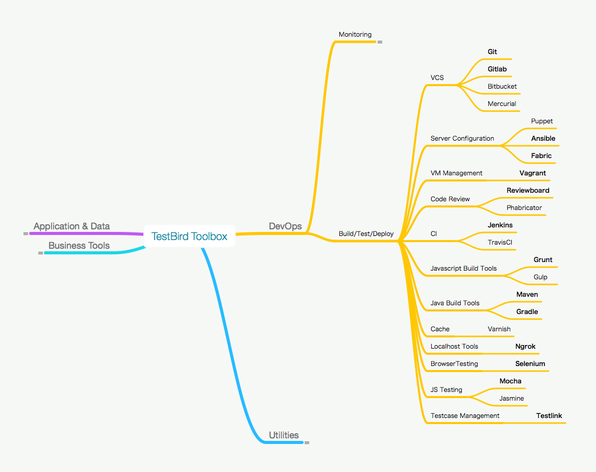
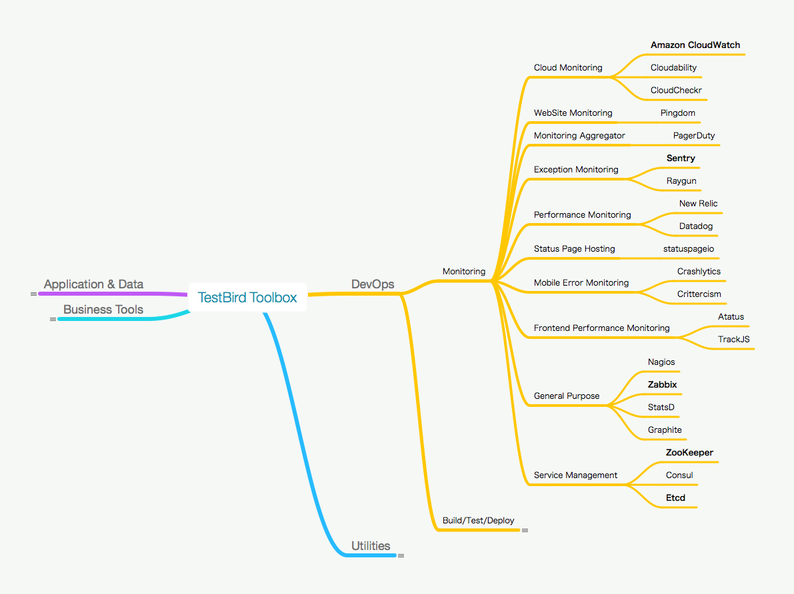
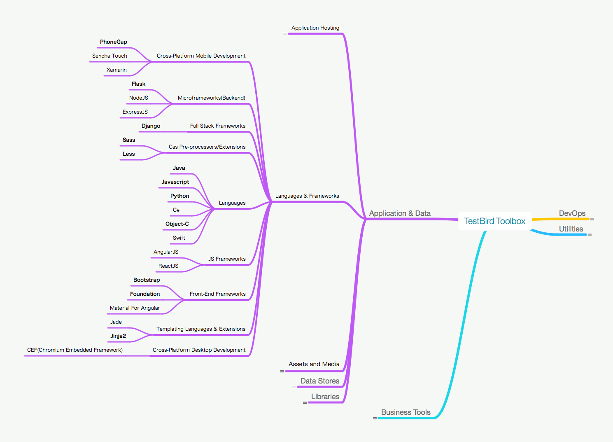

顶着昂贵的名头干着技术组长兼打杂的事情，
包括但不限于招聘，培训，鼓励程序猿。拉网线，
查机房，搜破解码，装系统，重装系统。讨论方案，
推翻方案，重新定方案，确定进度，拖延进度，重
新定进度，安抚程序员，安抚老板。
工作内容一般不包括Coding。
--最受欢迎答案
人：快速发展的研发团队
- 人数：2人 -> 40+人
- 职责：开发 -> 开发、测试、DevOps...
- 梯队：从只有两头变成高中初三代
- 流程：从无到有，逐步完善
人：快速发展的研发团队
- 推行全员全栈
- 实践微服务
- 分离业务团队和基础服务团队
技术: Build/Test/Deployment

技术: Monitoring/Service

技术:Language & Frameworks

不断修正，但目标清晰
- 任何一行代码都符合公司质量要求
- 一键编译运行任何项目
- 一键部署回退任何服务
- 员工从领机器到贡献第一行代码不超过一天
代码是用来读的
- 统一，可读，易复用
- One Project One Repo
- CodeInsight
- Code quality analysis
开发环境
- 环境搭建一键操作: boxen/Vagrant/docker
- 编译一键操作: shell scripts/bazel
统一的，自动化的开发环境带来：
Code Review
营造氛围：
- 基情只可以通过搞基获得
- 脑抽检测，人人需要
- 知识共享，统一风格
严格禁止：
- 鄙视链：必须看完
- 走过场：不时抽查
- 不负责：任何改动都需要review，omment都需要处理
要长跑不要短跑
- 两周一次迭代
- 先上Test，然后Staging，再上Production
- 关键功能灰度发布
- 所有的快跑都是短跑
总结
- 技术和沟通都是至关重要的技能
- 持续学习和提升效率的组织氛围：让团队先全栈
- 流程的基础是个人的意识形态和组织的体系结构